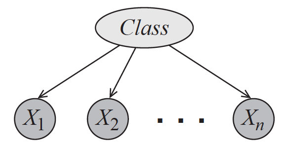
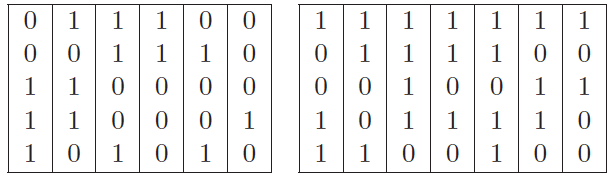
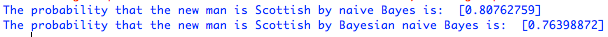
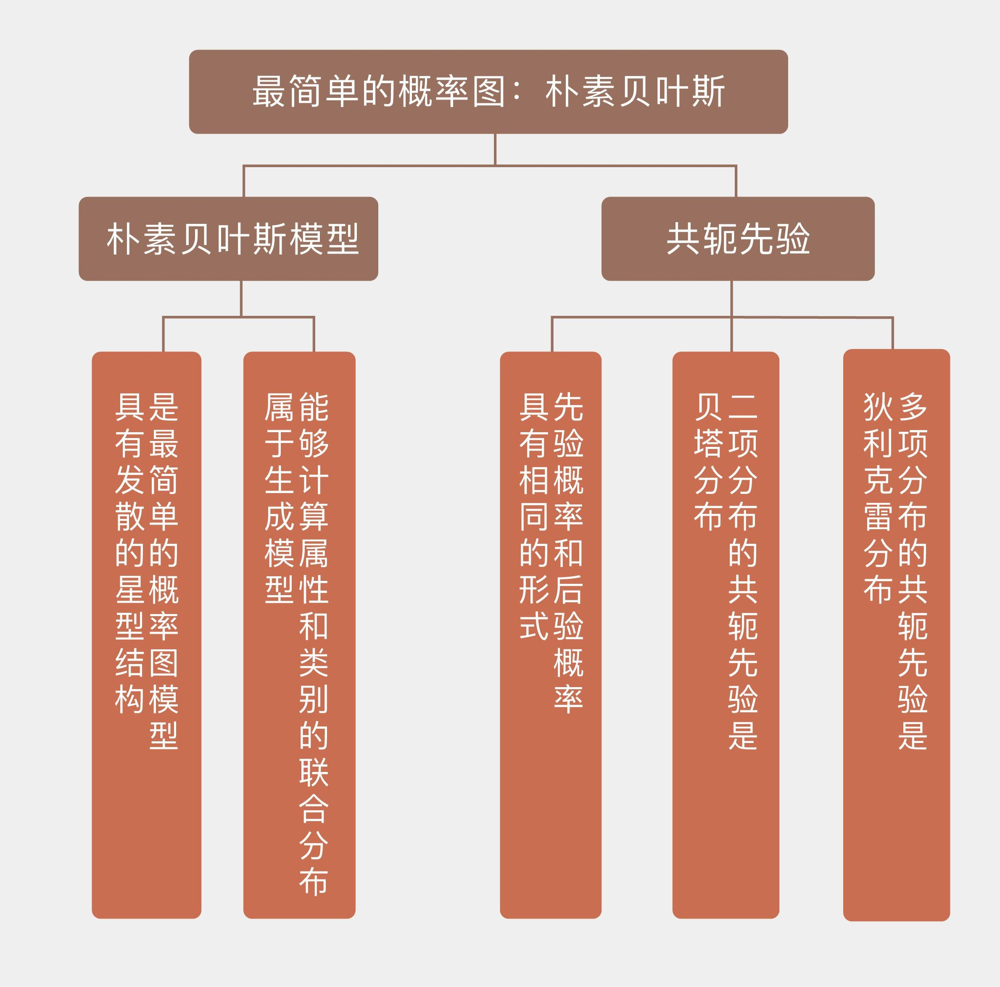

- 00 开篇词 打通修炼机器学习的任督二脉.md
- 01 频率视角下的机器学习.md
- 02 贝叶斯视角下的机器学习.md
- 03 学什么与怎么学.md
- 04 计算学习理论.md
- 05 模型的分类方式.md
- 06 模型的设计准则.md
- 07 模型的验证方法.md
- 08 模型的评估指标.md
- 09 实验设计.md
- 10 特征预处理.md
- 11 基础线性回归：一元与多元.md
- 12 正则化处理：收缩方法与边际化.md
- 13 线性降维：主成分的使用.md
- 14 非线性降维：流形学习.md
- 15 从回归到分类：联系函数与降维.md
- 16 建模非正态分布：广义线性模型.md
- 17 几何角度看分类：支持向量机.md
- 18 从全局到局部：核技巧.md
- 19 非参数化的局部模型：K近邻.md
- 20 基于距离的学习：聚类与度量学习.md
- 21 基函数扩展：属性的非线性化.md
- 22 自适应的基函数：神经网络.md
- 23 层次化的神经网络：深度学习.md
- 24 深度编解码：表示学习.md
- 25 基于特征的区域划分：树模型.md
- 26 集成化处理：Boosting与Bagging.md
- 27 万能模型：梯度提升与随机森林.md
- 28 最简单的概率图：朴素贝叶斯.md
- 29 有向图模型：贝叶斯网络.md
- 30 无向图模型：马尔可夫随机场.md
- 31 建模连续分布：高斯网络.md
- 32 从有限到无限：高斯过程.md
- 33 序列化建模：隐马尔可夫模型.md
- 34 连续序列化模型：线性动态系统.md
- 35 精确推断：变量消除及其拓展.md
- 36 确定近似推断：变分贝叶斯.md
- 37 随机近似推断：MCMC.md
- 38 完备数据下的参数学习：有向图与无向图.md
- 39 隐变量下的参数学习：EM方法与混合模型.md
- 40 结构学习：基于约束与基于评分.md
- 如何成为机器学习工程师？.md
- 总结课 机器学习的模型体系.md
- 总结课 贝叶斯学习的模型体系.md
- 结课 终有一天，你将为今天的付出骄傲.md
28 最简单的概率图：朴素贝叶斯
从今天起，我们将进入概率图模型的模块，以贝叶斯的角度重新审视机器学习。
在机器学习任务中，输入和输出之间并不是简单的一对一的决定关系，两者之间通常存在着一些可见或不可见的中间变量。要计算输出变量的概率分布，就得把这些中间变量纳入到建模的框架之中。要简洁明快地表达多个变量之间的复杂的相关关系，图模型无疑是理想的选择。将图模型和概率模型结合起来，就是这个模块的主题——概率图模型（probabilistic graphical model）。
在“人工智能基础课”中，我曾用简短的篇幅粗略地介绍过概率图模型的概念和分类。这次我们从实例出发，看一看最简单的概率图模型——朴素贝叶斯分类器（naive Bayes classifier），并以它作为从统计机器学习到概率图模型的过渡。
还记得朴素贝叶斯的原理吗？回忆一下，朴素贝叶斯利用后验概率最大化来判定数据所属的类别，其“朴素”之处在于条件独立性的引入。条件独立性假设保证了所有属性相互独立，互不影响，每个属性独立地对分类结果发生作用，这样类条件概率就变成了属性条件概率的乘积。这在概率图中体现为条件独立关系（conditioanl independence）：如果将朴素贝叶斯模型画成有向图的话，它就是下图中的贝叶斯网络，类别信息指向所有的属性，任何两个属性之间都没有箭头的指向。

朴素贝叶斯的概率图模型（图片来自Probabilistic Graphical Models: Principles and Techniques，图3.2）
朴素贝叶斯的好处在于可以将属性和类别的联合分布表示成一个关于类的先验分布（prior distribution）和一组与属性相关的条件概率分布（conditional probability distribution）的乘积，这个过程被称为因子分解（factorization）。如果数据共有\(N\)个属性变量\(X_i\)，其分类结果为另一个变量\(Y\)，那么朴素贝叶斯的因子分解就可以表示为
\[ p(Y, X) = p(Y) \\cdot \\prod\\limits_{i = 1}^N p(X_i | Y) \]
这种条件独立关系用概率图模型的术语来描述的话就是
\[ \\forall i,({X_i} \\bot {{\\bf X}_{ - i}}|Y) \]
它的含义是属性\(X_i\)和其他所有属性关于类别\(Y\)条件独立。将这个式子和前面的示意图结合起来，可以发现因子分解的模块化特性（modularity）。当一个新的属性出现时，整体上的联合分布肯定会发生变化。但利用因子分解，生成新的联合分布只需要添加新属性关于输出的条件分布，而无需对原始分布的其他参数做出调整。在概率图模型中，这种操作就是添加一条有向边及其对应的结点这么简单。
朴素贝叶斯通过因子分解来计算样本属于每个类别的后验概率。反过来，它也可以依赖因子分解来生成新的数据，因而属于生成模型的范畴。在生成样本时，朴素贝叶斯首先按照先验分布抽取出一个类别，再按照类别下的条件概率分布生成不同属性的取值。
在解决分类问题时，朴素贝叶斯在判别模型上的对应是逻辑回归，它体现出的是和朴素贝叶斯截然相反的思路。
逻辑回归的计算目标是分类边界，边界又是各个属性的线性组合，样本中每个属性的取值共同决定了样本。从图模型的角度观察，逻辑回归就是朴素贝叶斯的反转：朴素贝叶斯是类别变量\(Y\)中伸出若干个箭头指向每一个属性变量\(X_i\)；逻辑回归则是每个属性变量\(X_i\)都伸出一个箭头，共同指向类别变量\(Y\)。这意味着分类的输出依赖于属性的取值，根据这种依赖关系计算出来的是在不同的属性取值下，分类结果的可能性，也就是条件概率\(p(Y | X)\)。
朴素贝叶斯的运算流程在上一季中已经有过介绍，在这里简单地总结一下：先验分布就是训练数据集上不同类别的数据所占的比例；每一个条件概率分布可以利用最大似然估计来计算，其计算方式就是在同一个类别的所有数据中，统计属性为特定值的数据所占的比例。但这种方式有一个潜在的问题，当样本容量较小时，某些属性的取值可能压根儿没有出现过，导致计算出来的似然概率为0，从而与真实情况产生偏差。
要解决这个问题，传统的方法是在条件概率分布的计算中引入拉普拉斯平滑（Laplacian smoothing），而从纯贝叶斯方法的角度看，拉普拉斯平滑就是对隐含的参数引入先验分布。在贝叶斯方法中，参数的先验分布通常被设置为共轭先验。共轭先验（conjugate prior）是贝叶斯主义里的重要概念，指的是先验概率和后验概率具有相同的形式。
贝叶斯定理相当于用似然概率对先验概率进行加权得到后验概率，当先验概率和给定的似然概率共轭时，计算出的后验概率和先验概率将会服从同一分布，只是两者的参数有所不同。这就是引入共轭先验的好处：它将新概率分布的计算简化为新参数的计算，而无需重新确定分布的种类，从而降低了贝叶斯方法的运算复杂度。
看到这里，你是否想到了另一个相似的概念呢？共轭先验类似于线性代数中的特征向量，进一步推广就是信号理论中的特征函数。共轭先验相当于定义了一个函数空间，在这个空间上，作为泛函算子的似然概率作用在共轭先验上，定义了从先验到后验的演化过程，使输入和输出具有相同的形式。但这更大程度上是一种用于简化后验概率运算数学技巧，共轭先验本身并不能揭示关于数据机制任何潜在的规律。
既然共轭先验有这么容易计算，如何找到合适的共轭先验就成了下一个问题。可以证明，任何服从指数族分布的似然函数都存在共轭先验。在多分类问题中，每个样本都归属于多个类别中的一个，而属于每个类别的概率之和等于1，因此类的先验分布可以看成是二项分布的推广，叫作多项分布（multinomial distribution）或者类别分布（categorical distribution），其最典型的代表就是掷骰子得到的分布。狄利克雷分布（Dirichlet distribution）就是类别分布的的共轭先验，其表达式可以写成
\[ Dir({\\boldsymbol \\alpha}) = \\dfrac{\\Gamma(\\sum_{i = 1}^k \\alpha_i)}{\\prod_{i = 1}^K \\Gamma(\\alpha_i)} \\prod\\limits_{i=1}^K x_i ^ {\\alpha_i - 1}, \\sum\\limits_{i=1}^K x_i = 1 \]
其中\({\\boldsymbol \\alpha}\)是狄利克雷分布的参数，\(\\Gamma(\\cdot)\)表示伽马函数（gamma function）。利用因子分解后的似然概率对因子分解后的先验概率进行加权，其作用就是对先验分布的参数加以修正。狄利克雷分布的参数被修正为\(N_i + \\alpha_i\)，其中\(N_i\)是每个类别中的样本数目。当\(\\alpha = 1\)时，这些先验就等效为拉普拉斯平滑。
下面这个例子给出了关于贝叶斯朴素贝叶斯很好的说明，它来自大卫·巴伯（David Barber）的著作《贝叶斯推理与机器学习》（Bayesian Reasoning and Machine Learning）中的例10.3。这个例子是这样的：
“问题的任务是判断一个人到底是英格兰人还是苏格兰人，判断的依据是五个二元属性，从上到下分别是爱吃奶油酥饼、不喜欢拉格啤酒、喝威士忌、吃粥和不看英格兰的足球比赛。在训练数据中包括左侧6个英格兰人和右侧7个苏格兰人的属性列表。现在来了一个新的五元组\({\\bf x} = (1,0,1,1,0)^T\)，那这个人是苏格兰人的可能性有多大呢？”

上例中的训练数据集（图片来自Bayesian Reasoning and Machine Learning）
直接用朴素贝叶斯方法来求解这个问题的方法比较简单，容易计算出类先验概率\(p({\\rm scottish}) = 7 / 13, p({\\rm english}) = 6 / 13\)。在每个类别上又可以计算出相互独立的属性条件概率，将所有这些概率代入贝叶斯定理中就可以得到，这个人是苏格兰人的概率是0.8076，你可以自己验算一下。
可是用纯贝叶斯方法来解决这个问题，那就没那么简单了。出于简化运算的目的，这个例子没有给类分布设定先验，而是令属性关于类别的所有条件概率都服从相互独立的狄利克雷先验分布。由于狄利克雷分布是多项分布的共轭先验，而属性关于类别的二项分布又可以看成是多项分布的特例，因此根据先验计算出来的后验概率也服从狄利克雷分布，只是参数会有所变化。
假定属性的条件概率\(\\theta_s^i © = p(x_i = s | c)\)表示当数据的类别为\(c\)时，第\(i\)个属性的取值为\(s\)的条件概率。由于数据类别为2，属性数目为5，属性取值为2，条件概率的总数就是\(2 \\times 5 \\times 2 = 20\)，每个条件概率都对应一个无信息的均匀狄利克雷分布的超参数\(u_s^i © = 1\)。根据狄利克雷分布的性质，计算出的后验概率的超参数可以写成
\[ {\\hat u}_s^i © = u_s^i © + \\sum\\limits_{n: c^n = c} \\mathbb{I}\[x_i^n = s\] \]
这么一大堆让人眼花缭乱的符号表达的就是一个意思：在每个类别\(c\)中计算每个属性\(i\)等于每个值\(s\)出现的次数，再将计算结果加在三元组\(c, i, s\)所对应的原始参数\(u_s^i ©\)上。比方说，在\(c=0\)的英格兰人中，所有样里本\(i=1\)的第一个属性中，\(s=0\)的样本有3个，相应的\(u_0^1(0)\)就被更新为\(3 + 1 = 4\)了。
更新之后的参数就可以用来计算后验概率，计算出的后验概率将进一步被用于新样本的分类，其数学推导比较复杂，感兴趣的话你可以参考原书。利用狄利克雷分布的数学性质可以求出，新样本\({\\bf x} = (1,0,1,1,0)^T\)是苏格兰人的概率是0.764，这略低于非贝叶斯方法求出的结果。
在Scikit-learn中，实现朴素贝叶斯分类器的是naive_Bayes模块。由于前面例子中的属性都是二值属性，因此需要调用模块中的BernoulliNB类。在使用这个类时需要注意的是其中的参数\(\\alpha\)，这个参数的默认取值为1.0，表示对数据进行拉普拉斯平滑，将它设定为0则是直接利用数据进行计算。
利用这个类去处理上面的例子你会发现，\(\\alpha =0\)得到的是一般朴素贝叶斯的结果，\(\\alpha=1\)得到的则是贝叶斯朴素贝叶斯的结果。这也验证了拉普拉斯平滑的作用实际上就是给类别设定均匀分布的共轭的先验。

使用BernoulliNB类对文中例子的计算结果
今天我和你分享了朴素贝叶斯方法的概率图表示，以及贝叶斯方法中共轭先验的概念，包含以下四个要点：
朴素贝叶斯是最简单的概率图模型，具有发散的星型结构；
朴素贝叶斯能够计算属性和类别的联合分布，因而属于生成模型；
共轭先验可以保证先验分布和后验分布具有相同的形式和不同的参数；
拉普拉斯平滑的作用是给类别设定均匀分布的共轭先验。
朴素贝叶斯是最简单的贝叶斯分类器，如果将属性之间相互独立的强限制放宽，得到的就是树增强朴素贝叶斯（tree augmented naive Bayes），它可以看成是朴素贝叶斯到通用的贝叶斯网络的过渡。
你可以查阅资料，了解树增强朴素贝叶斯的原理，并在这里发表你的见解。

© 2019 - 2023 Liangliang Lee. Powered by gin and hexo-theme-book.